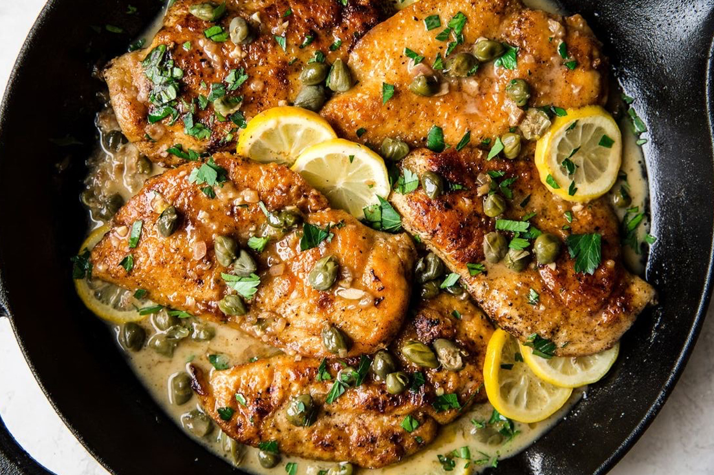

A Classic Recipe
chicken piccata combines thin and delicate
chicken breasts with a tart caper, white wine, lemon juice,
and creamy buttery sauce topped with briny capers.
Ingredients
- 3 boneless, skinless chicken breasts
- Kosher salt
- Freshly ground black pepper
- 1/4 c. (30 g.) all-purpose flour
- 1/2 c. extra-virgin olive oil, divided
- 6 tbsp. cold unsalted butter, cut into pieces
- 1/2 c. dry white wine
- 1/2 c. low-sodium chicken broth
- Juice of 1 lemon
- 1 (3.5-oz.) jar capers, rinsed
- Lemon wedges, for serving
Recipe Instructions (Steps)
-
Cut chicken breasts in half parallel to work surface all the way through.
In between 2 sheets of plastic wrap, pound each breast until 1/4" thick;
generously season with salt and pepper.
-
In a large shallow bowl, place flour. Dredge chicken in flour, shaking off excess.
In a large skillet over high heat, heat 1/4 cup oil until very hot.
Working with 3 chicken pieces at a time, cook, turning once, until golden brown,
about 2 minutes per side. Transfer to a plate.
Adjust heat as needed and repeat with remaining chicken.
-
In same skillet over high heat, bring wine, broth, and lemon juice to a boil.
Cook, stirring occasionally, until thickened and reduced by about one-quarter, about 5 minutes.
Reduce heat to low and add butter, one piece at a time, vigorously whisking after each addition;
don’t stop whisking until all butter is incorporated.
If sauce starts to break, add 1 tablespoon water and
continue to whisk until sauce is smooth and glossy.
-
Return chicken to skillet. Add capers, bring sauce to a light simmer,
and cook until warmed through, about 3 minutes.
Serve with lemon wedges alongside.
Return to top
Main page